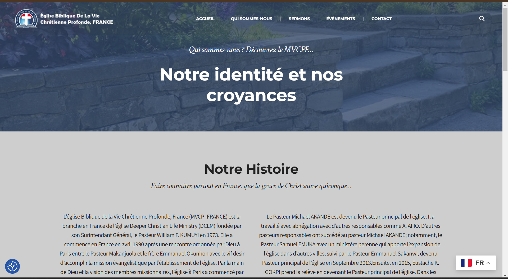
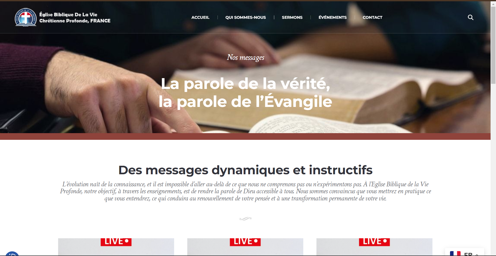
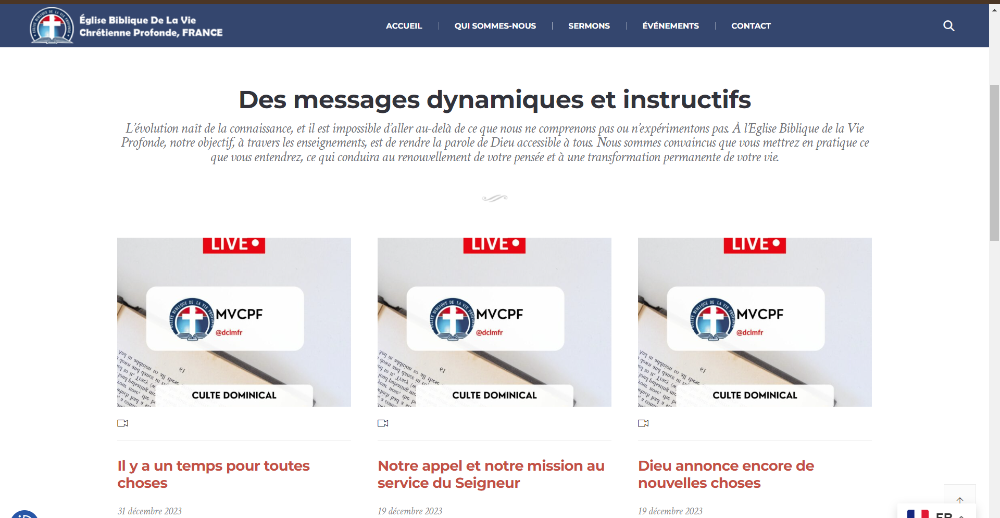
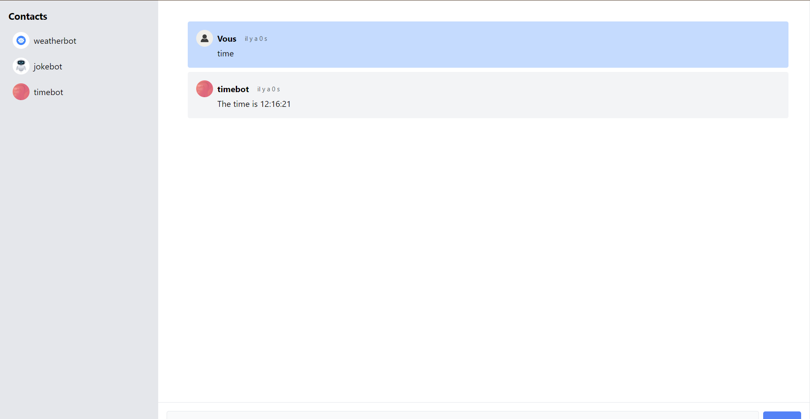
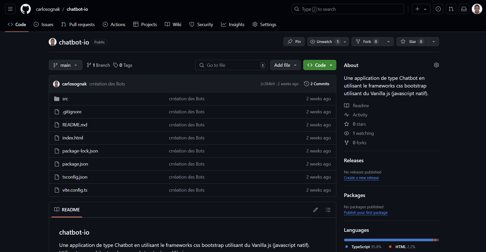
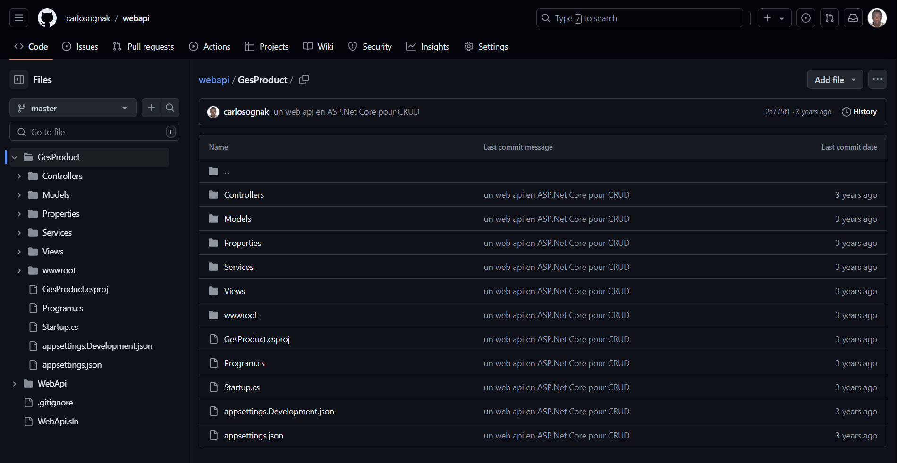

Années
d'Expérience
Kodjo OGNANKOTAN

Développeur full stack
Je suis un développeur d'applications full stack passionné avec plus de 4 ans d'expérience dans le domaine. Je crois fermement que la technologie peut être un moteur de changement...
0+
0+
Projets
Réalisés
Réalisés
0+
Employeurs
Satisfaits
Satisfaits
Témoignages
Donner aux gens les moyens d'agir dans le cadre d'un nouveau voyage digital avec mes services.

“Kodjo est un développeur professionnel qui aide vraiment notre équipe en ajoutant de la valeur à l'entreprise grâce à son savoir-faire.
Jim Decocq
Senior Front-end Software Dev, ebp Informatique
“Kodjo m'a aidé a résoudre un problème avec le logiciel EBP Compta. et ce grâce à son expertise sur le sujet. il est très professionnel et sait comment débuguer un problème
Dorcas Amagloh
Administrateur système de Consolidation financière, Carrefour
“J'ai apprécié travailler avec Kodjo à CIS-TOGO. Un collègue qui sait communiquer. Sa capacité à résoudre les bugs m'a beaucoup aidé sur mes projets
Ogoudoumi Komivi AWOKOU
Full Stack Developer Java/Angular, Sopra steria
“Kodjo m'a aidé a résoudre un problème avec le logiciel EBP Compta. et ce grâce à son expertise sur le sujet. il est très professionnel et sait comment débuguer un problème
Dorcas Amagloh
Administrateur système de Consolidation financière, Carrefour
“Kodjo est un développeur professionnel qui aide vraiment notre équipe en ajoutant de la valeur à l'entreprise grâce à son savoir-faire.
Jim Decocq
Senior Front-end Software Dev, ebp InformatiqueÀ Propos
Je suis un développeur d'applications full stack passionné avec plus de 4 ans d'expérience dans le domaine. Je crois fermement que la technologie peut être un moteur de changement positif dans le monde, et c'est cette conviction qui guide mes actions au quotidien.
Intégrité, engagement et collaboration sont les piliers de mes valeurs. Je m'efforce toujours de travailler avec honnêteté et transparence, en veillant à ce que mes actions reflètent mes principes fondamentaux. Je suis également connu pour mon dévouement et ma persévérance, ne reculant jamais devant un défi technique. En outre, je suis un fervent défenseur du travail d'équipe, convaincu que la collaboration est la clé du succès dans tout projet.
En tant que développeur fullstack, je suis passionné par la création d'applications innovantes qui répondent aux besoins réels des utilisateurs. J'aime explorer de nouvelles technologies et méthodologies de développement pour améliorer continuellement mes compétences et offrir des solutions plus efficaces.
Mes Expériences
Mes Formations
Mes Compétences
Découvrez les savoir-faire et aptitudes qui me distinguent dans mon domaine
Développement Web
Angular, C#, .Net Core, HTML, CSS, JavaScript, Git,
Bases de Données
SqlServer,MySQL, PostgreSQL, MongoDB
Communication
Excellente communication verbale et écrite
Travail en Équipe
Capacité à collaborer efficacement

Maîtriser l'Art de la Communication 🗣
Maîtriser l'Art de la Communication : Clé du Succès pour les Développeurs d'Applications
Ma Définition Personnelle de la Compétence
Pour moi, la communication, c'est la capacité à échanger efficacement des informations et des idées avec les membres de l'équipe, les clients et d'autres parties prenantes. En tant que développeur d'applications, cette compétence est importante pour plusieurs raisons. Premièrement, elle permet de clarifier les besoins et les attentes des clients. Deuxièmement, elle facilite la collaboration avec les collègues, ce qui est essentiel pour le succès des projets en équipe. Enfin, elle joue un rôle clé dans la résolution des problèmes, car une bonne communication permet de partager des solutions et des feedbacks constructifs rapidement.
La communication est importante pour moi car elle est au cœur de mon travail quotidien. Que ce soit lors de réunions de planification, de revues de code ou de discussions techniques, la capacité à communiquer clairement et efficacement fait la différence entre un projet réussi et un projet qui rencontre des obstacles.
Les preuves de cette compétence
- La Réunion de Planification
Lors d'une réunion de planification pour un projet complexe, j'ai joué un rôle clé en facilitant la discussion entre les membres de l'équipe et le client. Grâce à ma capacité à poser les bonnes questions et à reformuler les besoins du client, nous avons pu établir des spécifications claires et détaillées pour le projet. Cette clarté a permis à l'équipe de démarrer le développement sans ambiguïté, réduisant ainsi le risque d'erreurs et de retards.
- La Résolution de Conflits
Dans un autre projet, un conflit est survenu entre deux membres de l'équipe concernant l'implémentation d'une fonctionnalité. J'ai pris l'initiative de les réunir pour discuter du problème. En écoutant attentivement les points de vue de chacun et en facilitant un dialogue ouvert et respectueux, nous avons pu trouver un compromis qui satisfaisait les deux parties. Cette intervention a non seulement résolu le conflit mais a également renforcé la cohésion de l'équipe.
Voyons d'un oeil Critique, la Compétence
Ma compétence en communication fonctionne bien dans la plupart des situations, mais elle peut être mise à l'épreuve dans des contextes de forte pression ou avec des interlocuteurs particulièrement difficiles. Dans mon profil d'expert en ingénierie, la communication occupe une place centrale car elle influence directement la qualité de mon travail et la satisfaction des clients.
La vitesse à laquelle j'ai acquis cette compétence est notable. Au début de ma carrière, j'avais des difficultés à m'exprimer clairement lors des réunions techniques. Cependant, avec de la pratique et des retours constructifs, j'ai rapidement amélioré mes compétences de communication. Grâce à mon expérience, je conseille aux nouveaux développeurs de ne pas négliger cette compétence et de chercher constamment à l'améliorer, par exemple en participant à des formations ou en sollicitant des feedbacks réguliers.
Cette compétence, j’en fais quoi maintenant?
La communication occupe une place centrale dans mon projet personnel et professionnel. Mon objectif est de devenir un leader technique au sein de mon entreprise, et pour cela, je dois continuer à développer mes compétences en communication. Je prévois de suivre des formations en leadership et en gestion de projet pour améliorer encore ma capacité à communiquer de manière efficace et inspirante.
Je compte également m'auto-former en lisant des livres sur la communication et en participant à des ateliers et des conférences. En outre, je m'efforcerai de pratiquer régulièrement en prenant la parole lors de réunions et en partageant mes connaissances avec mes collègues.
Je retiens que :
La communication est une compétence indispensable pour un développeur d'applications. Elle permet de clarifier les besoins, de faciliter la collaboration et de résoudre les conflits. Mes expériences montrent que j'ai développé cette compétence de manière significative et qu'elle joue un rôle important dans mon profil professionnel. Pour l'avenir, je continuerai à travailler sur cette compétence pour atteindre mes objectifs personnels et professionnels et devenir un leader technique efficace et respecté.

Stratégies de Gestion du Temps pour Développeurs d'Applications
Optimisez Votre Productivité : Stratégies de Gestion du Temps pour Développeurs d'Applications
En tant que développeur d'applications, la gestion du temps est une compétence qui me permet de naviguer efficacement dans un monde de projets complexes, de délais serrés et de responsabilités multiples. Elle s'avère être un outil indispensable pour maximiser ma productivité, atteindre mes objectifs et assurer la qualité de mon travail.
Qu'est-ce-que la gestion du temps ?
La gestion du temps consiste à orchestrer et planifier mes tâches méticuleusement afin d'atteindre mes objectifs de manière optimale. Elle me permet de respecter les délais, de jongler entre différents projets et de maintenir une qualité de travail constante. Cette compétence est d'autant plus importante qu'elle m'aide à trouver un juste équilibre entre ma vie professionnelle et personnelle. En effet, en structurant mon temps efficacement, je m'assure d'avancer sur mes projets tout en évitant le stress et l'épuisement professionnel.
Parlons de cette compétence de façon concrète
- La Livraison d'un Projet en Avance
Dans un projet récent, aucours de mon alternance, notre équipe devait livrer une application complexe en trois mois. J'ai utilisé des outils de gestion du temps comme Trello pour organiser les tâches, fixer des échéances claires et suivre les progrès de chacun. Grâce à une planification rigoureuse et à une gestion efficace de mon temps, nous avons pu livrer le projet deux semaines avant la date prévue, ce qui a impressionné notre client et renforcé la confiance de notre équipe.
- La Gestion des Tâches Multiples
Lors d'un autre projet, j'avais plusieurs responsabilités simultanées : coder des fonctionnalités, résoudre des bugs, et participer à des réunions de planification. Pour gérer ces tâches multiples, j'ai utilisé la méthode Pomodoro, qui consiste à travailler par intervalles de 25 minutes suivis de courtes pauses. Cette approche m'a aidé à rester concentré et productif, tout en évitant la fatigue. Résultat, j'ai pu accomplir toutes mes tâches sans retard ni erreur.

Vers une optimisation continue
Si ma gestion du temps s'avère généralement efficace dans la plupart des situations, elle peut parfois être mise à l'épreuve lors de périodes de forte charge de travail ou face à des imprévus urgents. En tant qu'expert en ingénierie, la gestion du temps est une compétence clé qui influence directement ma capacité à livrer des projets de haute qualité dans les délais impartis.
Je suis conscient que j'ai acquis cette compétence à un rythme remarquable. Au début de ma carrière, je luttais souvent contre la procrastination et la mauvaise priorisation des tâches. Cependant, grâce à des outils de gestion du temps et à des techniques de productivité, j'ai rapidement amélioré mes compétences. Je tiens à conseiller aux développeurs débutants de planifier systématiquement leurs journées et de fixer des objectifs réalistes pour éviter la surcharge de travail.
Cette compétence, j’en fais quoi maintenant?
La gestion du temps occupe une place centrale dans mon projet personnel et professionnel. Mon objectif est de devenir un chef de projet compétent, capable de gérer des équipes et des projets complexes. Pour y parvenir, je dois continuer à perfectionner mes compétences en gestion du temps.
Dans cette optique, je prévois de suivre des formations en gestion de projet et de lire des livres sur la productivité afin d'approfondir mes connaissances. Je compte également m'auto-former en utilisant des applications de gestion du temps et en participant à des webinaires et ateliers sur le sujet. Enfin, je m'efforcerai de partager mes expériences et mes techniques avec mes collègues pour améliorer la productivité de toute l'équipe.
Une compétence clé pour un avenir prometteur
la gestion du temps est une compétence clé qui ouvre la voie à un avenir prometteur pour les développeurs d'applications. Elle leur permet d'être plus productifs, d'atteindre leurs objectifs, de gérer leur stress, de s'adapter aux changements, de collaborer efficacement et de se développer personnellement. En investissant dans le développement de cette compétence essentielle, les développeurs peuvent non seulement exceller dans leur carrière, mais aussi profiter d'une vie plus épanouissante et équilibrée. Pour l'avenir, je continuerai à travailler sur cette compétence afin d'atteindre mes objectifs personnels et professionnels et devenir un chef de projet efficace et respecté.
Débogueur hors pair 🛠: Maîtriser les mystères du code pour des applications sans faille
En tant que développeur d'applications, je me bats quotidiennement contre un ennemi invisible : les bugs. Ces imperfections sournoises peuvent surgir à tout moment, menaçant la stabilité et la performance de mes créations numériques. C'est là qu'intervient mon expertise en résolution de bugs, une compétence indispensable qui me permet de déjouer les pièges du code et d'offrir aux utilisateurs une expérience fluide et sans accroc.
C'est quoi le déboguage ?
Pour moi, le déboguage n'est pas une simple corvée, mais un défi intellectuel stimulant. Chaque bug est un puzzle à résoudre, une énigme à déchiffrer. J'éprouve une satisfaction immense à identifier la source d'un problème, élaborer une solution élégante et observer mon application fonctionner sans problème.
Cette compétence est d'autant plus importante qu'elle me permet de garantir la qualité de mes créations. Un logiciel exempt de bugs est non seulement plus agréable à utiliser, mais également plus fiable et plus sécurisé. En résolvant les problèmes potentiels dès le départ, je contribue à la satisfaction des utilisateurs et à la pérennité de mes applications.

Sur le terrain, face aux bugs
Mon expertise en résolution de bugs s'est forgée au fil de nombreuses batailles contre des ennemis numériques de toutes sortes. Voici deux anecdotes qui illustrent ma capacité à surmonter les défis :
- La Traque d'un bug insaisissable
Lors du développement du Microservice de gestion de stock, je me suis confronté à un bug furtif qui provoquait des plantages aléatoires du système. Ce bug insaisissable semblait surgir de nulle part, sans laisser de trace ni d'indice. Déterminé à le vaincre, j'ai mené une enquête minutieuse, analysant le code ligne par ligne, scrutant les logs du serveur et reproduisant les étapes qui déclenchaient le crash. Après des heures de persévérance, j'ai finalement découvert le coupable : une erreur de synchronisation entre les threads de l'application. Grâce à une correction précise, j'ai éliminé le bug pour de bon, sauvant l'application des plantages et garantissant une expérience d'achat fluide aux utilisateurs.
- La Résolution d'un bug sous pression
A quelques jours de la deadline d'un projet de site web de l'église de la vie profonde, un bug majeur a surgi, menaçant de retarder la livraison du site. Face à l'urgence, j'ai gardé mon calme et analysé la situation avec méthode. En examinant les rapports d'erreurs et en testant différentes solutions, j'ai identifié la cause du problème : une incompatibilité avec une version récente du système d'exploitation et du language de développement PHP Grâce à une solution de contournement rapide et efficace, j'ai pu maintenir le site fonctionnel et respecter la date limite, soulageant ainsi l'équipe et le client.
Un apprentissage continu
Ma capacité à résoudre des bugs est généralement efficace, mais je suis conscient qu'il y a toujours place à l'amélioration. Face à des problèmes complexes ou à des technologies nouvelles, la résolution peut s'avérer plus ardue. En tant qu'Expert en Ingénierie, la maîtrise de la résolution de bugs est un élément indispensable de mon profil, car elle me permet de garantir la qualité et la fiabilité des applications que je développe.
J'ai acquis cette compétence à un rythme soutenu, aiguisant mes capacités d'analyse et de déduction au fil des projets. Au début de ma carrière, je faisais parfois l'erreur de sauter aux conclusions trop rapidement, ce qui m'amenait à passer à côté de la source réelle du problème. Avec l'expérience et l'adoption d'une approche méthodique, j'ai appris à être plus patient, rigoureux et persévérant dans ma recherche de solutions.
Je conseille aux développeurs débutants de cultiver leur curiosité, de ne pas hésiter à explorer différentes pistes et de toujours garder à l'esprit que la résolution de bugs est un processus itératif qui exige de la patience et de la ténacité.

Élever le Niveau de Qualité : Les Tests d'Intégration comme Pilier de l'Excellence Logicielle 🚀💡
je voudrais partager avec vous une facette indispensable du monde du développement logiciel où l'obsession pour la qualité est la clé de la réussite. Nous allons rentrer dans l'univers des tests d'intégration. Au cours de mon récent parcours en alternance, je me suis plongé dans cet aspect passionnant du développement logiciel, découvrant comment les tests d'intégration peuvent être un catalyseur de l'amélioration continue. Cet article explore le rôle essentiel des tests d'intégration, les déclarant comme le véritable pilier de l'excellence logicielle.
Rejoignez-moi pour un voyage à travers l'univers complexe des tests d'intégration et découvrez comment cette pratique souvent sous-estimée peut être un élément qui propulse votre produit vers de nouveaux sommets de qualité.
Les Tests d'intégration, de quoi s'agit-il ?
Selon PARASOFT, Les tests d'intégration sont définis comme l'évaluation de parties combinées d'une application pour déterminer si elles fonctionnent correctement. Les tests d'intégration peuvent être effectués de deux manières :
- Tests d'intégration ascendants : Les tests commencent par des tests unitaires, suivis de tests de combinaisons d'unités de niveau progressivement supérieur appelées modules ou builds.
- Tests d'intégration descendants : Dans ce type de test, les modules de niveau le plus élevé sont testés en premier, et progressivement, les modules de niveau inférieur sont testés par la suite.
Dépasser les Frontières des Composants Individuels
Dans le développement logiciel moderne, les applications sont rarement constituées d'un seul composant isolé. Elles sont plutôt le fruit de l'interaction complexe entre différents modules et services. Les tests d'intégration jouent un rôle fondamental en examinant la manière dont ces composants interagissent, garantissant ainsi que l'ensemble du système fonctionne de manière harmonieuse.

Une Assurance Qualité Proactive
Plutôt que de se limiter à la vérification des composants individuels, les tests d'intégration offrent une assurance qualité proactive en identifiant les éventuels points de friction entre les différentes parties du logiciel. Cela permet une correction précoce des erreurs et une optimisation constante des performances, contribuant ainsi à la satisfaction du client et à la confiance dans le produit final.
Amélioration Continue et Feedback Rapide
Grâce à l'automatisation des tests d'intégration, les équipes de développement peuvent obtenir un feedback rapide sur les changements apportés au code. Cela crée un cycle d'amélioration continue, où les erreurs sont détectées et corrigées rapidement, favorisant ainsi une culture de développement axée sur la qualité.

Collaboration Transparente entre Équipes
Les tests d'intégration favorisent également une collaboration transparente entre les équipes de développement et de test. En partageant une compréhension commune des interactions entre les composants, les équipes peuvent travailler de manière plus étroite et résoudre les problèmes de manière collaborative, accélérant ainsi le processus de développement.
Les Défis Positifs des Tests d'Intégration
Bien sûr, les tests d'intégration ne sont pas sans défis. La mise en place de scénarios de test complets et la gestion efficace des ressources sont des aspects importants. Cependant, chaque défi rencontré est une opportunité de renforcer les compétences et d'optimiser les processus.
- Mise en place de scénarios de test complets :
Les tests d'intégration impliquent souvent plusieurs composants logiciels interagissant les uns avec les autres. La création de scénarios de test complets nécessite une compréhension approfondie de l'architecture du système et des dépendances entre les différentes parties. Les testeurs doivent définir des cas de test qui couvrent toutes les interactions possibles pour garantir une validation exhaustive de l'intégration.
- Gestion efficace des ressources :
Les tests d'intégration peuvent être gourmands en ressources, en particulier lorsque de nombreux composants sont impliqués. La gestion des ressources, telles que la puissance de traitement, la mémoire et les bases de données, est un défi important. Il est essentiel de s'assurer que les ressources sont allouées de manière optimale pour éviter les retards et les inefficacités.
- Complexité des systèmes distribués :
Dans les architectures modernes basées sur des microservices ou d'autres modèles distribués, les tests d'intégration peuvent devenir encore plus complexes. Coordonner et tester l'interaction entre plusieurs services peut être un défi, et la gestion des erreurs dans un environnement distribué nécessite une attention particulière.
- Automatisation des tests :
L'automatisation des tests d'intégration est nécessaire pour garantir une exécution rapide et fréquente des tests. Cependant, la mise en place d'une infrastructure d'automatisation robuste peut être un défi en soi. Il faut développer des scripts de test fiables, maintenir l'automatisation au fil du temps, et intégrer les tests dans des pipelines d'intégration continue.
- Évolutivité des tests :
Au fur et à mesure que le logiciel évolue, les tests d'intégration doivent également être mis à jour pour refléter les nouvelles fonctionnalités et les modifications de l'architecture. La gestion de la complexité croissante des tests tout en maintenant une couverture exhaustive devient un défi constant.
- Détection et résolution des anomalies :
Identifier et résoudre les problèmes détectés lors des tests d'intégration nécessitent une collaboration efficace entre les équipes de développement et de test. La communication rapide et claire est essentielle pour résoudre les problèmes de manière proactive et minimiser les retards dans le cycle de développement.
Les tests d'intégration ne sont pas simplement une case à cocher dans le processus de développement logiciel, mais plutôt un catalyseur essentiel pour atteindre l'excellence. Mon voyage à travers ce domaine a été une expérience formatrice, qui m'a donné une perspective approfondie sur la manière dont la qualité logicielle peut être élevée grâce à une approche proactive des tests. J'aimerais savoir ce que vous pensez des tests d'intégration et entendre vos expériences à ce sujet. N'hésitez pas à partager dans les commentaires !

La Gestion de Bases de Données 🛢️
La gestion de bases de données est une compétence essentielle pour les développeurs d'applications. Elle me permet de concevoir, créer, maintenir et optimiser des systèmes de stockage d'informations robustes et efficaces, garantissant ainsi le bon fonctionnement des applications et la satisfaction des utilisateurs.
Ce que je pense de cette compétence
Pour moi, la gestion de bases de données implique bien plus que la simple création de tables et de requêtes SQL. Il s'agit d'un processus complet qui englobe la création, la maintenance et l'optimisation des bases de données pour stocker et récupérer efficacement des informations. En tant que développeur d'applications, cette compétence est indispensable car elle permet d'assurer que les applications fonctionnent de manière fluide et efficace en gérant les données de manière optimale. La gestion de bases de données est particulièrement importante pour moi car elle garantit l'intégrité, la sécurité et la performance des données utilisées par les applications que je développe. En maîtrisant cette compétence, je peux concevoir des systèmes robustes et évolutifs qui répondent aux besoins des utilisateurs.
Mes réalisations en matière de gestion de bases de données
Au cours de ma carrière, j'ai eu l'opportunité de mettre en pratique mes compétences en gestion de bases de données dans divers projets concrets. Parmi mes réalisations les plus marquantes, je citerais :
- Optimisation des Requêtes SQL
Problème : Une application souffrait de temps de réponse lents à cause
de
requêtes SQL inefficaces.
Action: J'ai analysé les requêtes SQL et identifié celles qui
posaient
problème. J'ai ensuite optimisé ces requêtes en utilisant diverses
techniques, telles que la création d'index, la restructuration des jointures
et l'utilisation de requêtes plus efficaces.
Résultat: Les temps de réponse de l'application ont été
considérablement
réduits, ce qui a permis une expérience utilisateur plus fluide. De plus,
l'optimisation des requêtes a permis de réduire la charge sur le serveur de
base de données, ce qui a amélioré la stabilité globale du système.
- Migration d'une Base de Données
En 2020, Au debut de ma carrière professionnelle, nous devions migrer une base de données volumineuse vers un nouveau système de gestion de bases de données (SGBD). J'ai planifié et exécuté cette migration en veillant à minimiser les interruptions de service. Grâce à une planification minutieuse et à des tests rigoureux, la migration s'est déroulée sans problème, et nous avons pu bénéficier des nouvelles fonctionnalités du SGBD sans affecter les utilisateurs.
Prenons du recul : l'importance de la gestion de bases de données
Ma compétence en gestion de bases de données fonctionne bien dans la plupart des situations, mais elle peut être mise à l'épreuve par des bases de données très volumineuses ou des exigences de performance très élevées. Dans mon rôle d'expert en ingénierie, cette compétence est essentielle car elle influence directement la qualité et la fiabilité des applications que je développe.
La vitesse à laquelle j'ai acquis cette compétence est notable. Au début de ma carrière, j'avais peu d'expérience en gestion de bases de données. Cependant, grâce à des projets variés et à une formation continue, j'ai rapidement amélioré mes compétences. Je conseille aux nouveaux développeurs de se familiariser avec les concepts de base des bases de données et de pratiquer régulièrement pour améliorer leurs compétences.

L'Autonomie : Mon Atout Maître pour Exceller en tant que Développeur 🏋️
Dans le monde trépidant du développement d'applications, où les délais sont serrés et les défis constants, l'autonomie est une qualité qui fait la différence. Pour moi, c'est plus qu'une simple compétence, c'est ma philosophie de travail. C'est ce qui me permet de naviguer dans l'incertitude, de prendre des décisions éclairées et de livrer des résultats exceptionnels, sans attendre constamment des instructions.
L'Autonomie en Action
L'autonomie n'est pas seulement la capacité à travailler seul, mais plutôt la liberté d'agir, d'explorer et d'apprendre. C'est être proactif, anticiper les problèmes et les solutions, et prendre les rênes quand il le faut. C'est aussi assumer la responsabilité de mes actions et de mes résultats, sans crainte de l'échec.
Quand l'Autonomie Porte ses Fruits
Mon expérience regorge d'exemples où l'autonomie m'a permis de briller. Voici quelques-unes de mes réalisations les plus marquantes :
- Capitaine à bord : Développement d'une fonctionnalité en solo
Récemment Lors de mon alternance, pour un nouveau projet Web de gestion commerciale pour les PME, j'ai été chargé de développer une librairie front pour une nouvelle fonctionnalité. Sans supervision directe, Muni d'un cahier des charges succinct, j'ai analysé les besoins, planifié les étapes de développement et mis en œuvre la fonctionnalité de A à Z. Tests et résolution de bugs inclus, le tout sans supervision directe. Cette mission en solitaire m'a permis de livrer la fonctionnalité dans les délais et avec une qualité irréprochable, répondant ainsi parfaitement aux attentes.
- Détective technique : Résolution d'un problème complexe
Sur un autre projet, notre équipe s'est heurtée à un problème technique complexe qui freinait notre avancée. Face à ce défi, j'ai pris les rênes de l'enquête. J'ai parcouru forums et sites web, testé différentes approches, et finalement trouvé la solution miracle qui a débloqué la situation. Mon autonomie dans la recherche et la résolution du problème a été vitale pour remettre le projet sur les rails.
Un Parcours d'Autonomisation
Si mon autonomie est aujourd'hui un atout indéniable, je reconnais qu'elle a évolué au fil du temps. Au début de ma carrière, je comptais davantage sur les conseils et les instructions. Mais avec l'expérience et la confiance acquises, j'ai développé une aisance à travailler de manière autonome. Je suis fier de ce parcours et je encourage les nouveaux développeurs à suivre la même voie : osez prendre des initiatives, approfondir vos connaissances et chercher constamment à vous améliorer.
L'autonomie au cœur de mes ambitions
Au centre de mes aspirations personnelles et professionnelles se trouve l'autonomie. Mon objectif ultime est de devenir un développeur fullstack ultra-autonome, capable de piloter des projets complexes de bout en bout. Pour concrétiser cette ambition, je dois continuer à affûter mes compétences en prise de décision, en gestion de projet et en résolution de problèmes.
Des formations en gestion de projet et en leadership sont d'ores et déjà au programme pour renforcer mon autonomie. En parallèle, je compte m'auto-former en participant à des projets open-source et en me lançant dans des projets personnels qui nécessitent une grande indépendance. Enfin, je m'engage à partager mes expériences et mes techniques avec mes collègues pour cultiver une culture de l'autonomie au sein de l'équipe.
Mes Réalisations
Je concrétise vos idées et donc vos souhaits sous la forme d'un projet web unique qui vous inspire, vous et vos clients.

vieprofonde.org
Conception du Site Web de l'Église : L'Église de la Vie Profonde

Chatbot-io
Une application de type Chatbot en utilisant le frameworks css bootstrap utilisant du Vanilla js (javascript natif). Utilisant une architecture hexagonal structuré par Vite.js

GesProduct
Le Développement d'un Microservice de Gestion de Stock: Une Aventure Technologique enrichissante

Conception du site web de l'Église de la Vie Profonde
Une expérience enrichissante et un succès communautaire.
Category
Web Application
Client
Ministère de la vie chrétienne profonde France
Start Date
March , 2023
Developper



La conception du site web de l'Église de la Vie Profonde a été une aventure enrichissante à la fois sur le plan technique et personnel. Cette expérience m'a permis de mettre en pratique mes compétences en développement web et de contribuer à la création d'une plateforme en ligne moderne et accessible pour la communauté de l'église.
Un site web au service de la communauté
Le projet avait pour objectif de créer un site web fonctionnel et convivial répondant aux besoins de la communauté de l'église. Le site devait servir de point d'accès centralisé pour les membres, les visiteurs et les chercheurs de foi, en offrant des informations sur les services, les événements et les ressources spirituelles.
Assurer une présence en ligne efficace et sécurisée
L'église souhaitait moderniser sa présence en ligne pour mieux servir sa communauté, mais le site web existant était obsolète et peu fonctionnel. Il était important de créer un site web facile à naviguer, accessible à tous, et offrant une expérience utilisateur fluide. La sécurité des données des utilisateurs et de l'église était également une priorité majeure.
Réalisation : Un processus méthodique et rigoureux
La conception du site web s'est déroulée en plusieurs étapes :
- Analyse des besoins: Identification des fonctionnalités nécessaires et des attentes des utilisateurs.
- Conception de l'architecture: Élaboration de la structure du site en utilisant WordPress, MySQL et PHP.
- Développement: Création des pages principales, intégration des plugins WordPress pour les fonctionnalités supplémentaires et mise en place de la base de données MySQL.
- Tests: Réalisation de tests de compatibilité, de performance et de sécurité pour s'assurer du bon fonctionnement du site.
- Lancement: Mise en ligne du site et communication auprès des membres de l'église pour les informer des nouvelles fonctionnalités.
- Maintenance: Suivi post-lancement pour corriger les bugs et mettre à jour le site régulièrement.
Résultats : Un succès sur toute la ligne
La conception du site web de l'Église de la Vie Profonde a été un véritable succès. Ce projet m'a permis de :
- Renforcer mes compétences techniques en WordPress, PHP et MySQL.
- Acquérir de l'expérience en gestion de projet web, de la conception à la mise en ligne.
- Contribuer à un projet à but non lucratif ayant un impact positif sur la communauté.
Pour l'église, les résultats ont également été très positifs :
Le nouveau site web a apporté de nombreux avantages à l'église et à ses membres. Le site web moderne et convivial a permis d'attirer plus de visiteurs, augmentant ainsi la visibilité de l'église dans la communauté. L'accès facilité à l'information a permis aux membres de l'église de rester informés des événements, des services et des activités de l'église, ce qui a conduit à une participation plus active. La centralisation des informations sur le site web a permis de réduire la charge administrative et d'améliorer la gestion des activités de l'église, libérant ainsi du temps pour que les membres de l'église puissent se concentrer sur des tâches plus importantes.
Chatbot-io
Création d'un Chatbot Web Interactif : Une Aventure Technique, Créative et instructive.
Category
Web Application
Lien du projet
Start Date
May , 2024
Developper



Plongez dans le récit de la création d'un chatbot web interactif, une expérience technique et créative enrichissante qui a donné vie à une application captivante et divertissante.
Définissons le contexte de Développement
Le projet s'inscrit dans le cadre d'une formation sur les technologies web, visant à mettre en pratique les compétences en JavaScript Vanilla, Node.js et Bootstrap. Il s'agissait également de démontrer la capacité à concevoir et réaliser une application web complète sans recourir à des frameworks JavaScript externes.
Les 3 visions du chatbot
Ce projet d'étude visait à concrétiser 3 objectifs clés :
- Interactivité : Donner vie à une application où les utilisateurs peuvent interagir avec des chatbots multiples, favorisant des conversations engageantes et stimulantes.
- Modularité : Structurer le code de manière organisée et efficace en suivant les principes de la programmation orientée objet (POO) et de la programmation fonctionnelle, garantissant une évolutivité et une maintenabilité accrues.
- Accessibilité: Garantir une interface utilisateur inclusive et réactive grâce à l'utilisation de Bootstrap, permettant à tous les utilisateurs de profiter pleinement de l'expérience.
Les Défis Majeurs et les Enjeux Déterminants du Projet
- Simplicité d'utilisation : Assurer que l'interface utilisateur soit intuitive et facile à naviguer.
- Réactivité : Garantir que les bots répondent rapidement et de manière pertinente aux commandes des utilisateurs.
- Gestion des données : Utiliser le localStorage pour préserver les messages en cas de rafraîchissement de la page.
Le "Comment" de la Réalisation : Un processus méthodique
Le projet s'est déroulé en suivant une méthodologie rigoureuse, garantissant une progression structurée et efficace:
- Analyse des besoins: dentifier les fonctionnalités requises et les attentes des utilisateurs, définissant clairement les objectifs à atteindre.
- Conception de l'architecture: Définir la structure du projet en utilisant JavaScript Vanilla, Node.js et Bootstrap, établissant les fondations solides de l'application.
- Développement: Implémenter les fonctionnalités principales, y compris la gestion des bots, la communication avec les utilisateurs et l'interface utilisateur, donnant vie à l'application.
- Intégration d'APIs : Enrichir les fonctionnalités des bots en utilisant des APIs externes, élargissant les possibilités d'interaction et d'information.
- Documentation et déploiement: Documenter le code de manière claire et concise, créer un repository GitLab pour une gestion efficace du projet et déployer l'application, la rendant accessible aux utilisateurs.
Perspectives d'Avenir: Un Chatbot en Constante Évolution
Actuellement, le chatbot web est pleinement opérationnel et répond efficacement aux besoins des utilisateurs. Il est hébergé sur un repository GitLab, où le code est bien structuré et documenté, facilitant ainsi la maintenance et les futures améliorations. La base de code est conçue pour être évolutive, permettant d'ajouter facilement de nouvelles fonctionnalités et de répondre aux futurs défis techniques. Grâce à l'utilisation de technologies robustes telles que JavaScript Vanilla, Node.js, et Bootstrap, le chatbot offre une expérience utilisateur fluide et réactive, tout en garantissant une gestion efficace des ressources. En somme, le projet est bien positionné pour évoluer et s'adapter aux nouvelles exigences du marché et des utilisateurs.
L'ajout de nouvelles fonctionnalités et de commandes est également une priorité pour enrichir les interactions et maintenir l'intérêt des utilisateurs. Par exemple, des commandes personnalisées et des réponses plus contextuelles pourraient être implémentées pour offrir une expérience plus dynamique et personnalisée. De plus, l'intégration de nouvelles APIs pourrait élargir les capacités des bots, les rendant plus utiles et polyvalents.
À plus long terme, il est prévu des mises à jour pour intégrer de nouvelles technologies et APIs, garantissant que l'application reste à la pointe de l'innovation. Une perspective intéressante serait d'étendre l'application pour inclure des fonctionnalités avancées telles que l'analyse des sentiments, qui permettrait aux bots de comprendre et de répondre aux émotions des utilisateurs, ou la reconnaissance vocale, offrant une nouvelle dimension d'interaction. Ces évolutions transformeront le chatbot en une plateforme encore plus interactive et intuitive.
GesProduct
Le Développement d'un Microservice de Gestion de Stock: Une Aventure Technologique enrichissante
Category
Web Application
Lien du projet
Start Date
March , 2022
Developper



La réalisation du microservice de gestion de stock a été une expérience enrichissante, me permettant de consolider mes compétences en développement logiciel et en gestion de projet. Ma contribution principale a été de concevoir une architecture modulaire et scalable, en utilisant des technologies modernes comme .NET Core et SQL Server. J'ai également appris à intégrer des outils de documentation comme Swagger, et à utiliser Git pour le contrôle de version. Ce projet m'a permis de comprendre les défis et les enjeux liés à la gestion de stocks, ainsi que l'importance d'une solution robuste et performante pour les entreprises.
Vers une Gestion de Stock Automatisée et Sécurisée
A la base, ce projet était le sujet de mon mémoire de fin d'étude de Bachelor en Informatique. Il s'agissait de concevoir et de développer un microservice de gestion de stock pour une entreprise fictive, en utilisant les technologies les plus adaptées pour répondre aux besoins spécifiques de l'entreprise. Mais plus tard c'est devenu un Prouf of concept (POC) pour un projet interne
Le microservice de gestion de stock vise à fournir une solution efficace pour suivre, gérer et optimiser les stocks d'une entreprise. Ce microservice permet de centraliser les informations sur les produits, de surveiller les niveaux de stock en temps réel et de faciliter la prise de décision pour les réapprovisionnements.
Comment concevoir ce Microservice ?
Conscient des enjeux et des risques potentiels (intégration complexe, gestion des données sensibles, bugs et défaillances), j'ai adopté une approche méthodique pour mener à bien ce projet.
Tout d'abord, j'ai procédé à une analyse des besoins et rédigé les spécifications techniques. Ensuite, j'ai conçu l'architecture du microservice en utilisant .NET Core. Le développement de l'API RESTful avec une documentation exhaustive via Swagger a suivi, puis la mise en place de la base de données SQL Server et la création des schémas nécessaires. Des tests unitaires et d'intégration ont été réalisés pour garantir la fiabilité du service, et enfin, le déploiement et l'intégration continue avec Git ont permis le suivi des versions et la collaboration.
Satisfaction mitigée : un microservice prometteur, mais en attente d'intégration
Le développement de ce microservice de gestion de stock a été un succès, démontrant la valeur des solutions technologiques pour l'optimisation des processus métier. Il s'agit d'un exemple concret de la façon dont une approche méthodique et des outils adaptés peuvent conduire à des réalisations concrètes et bénéfiques pour une entreprise.
- Pour Moi
Ce projet m'a permis de renforcer mes compétences en développement back-end et en gestion de bases de données. J'ai également acquis une expérience précieuse en matière de documentation API et de gestion de projet agile. et pour finir j'ai pu validé mon mémoire avec une mention très bien. Une satisfaction jusqu'à ce niveau.
- Pour l'entreprise
Si le développement a apporté des améliorations notables, il est important de souligner que la satisfaction ne peut être totale à ce stade. En effet, le microservice se trouve actuellement en phase de POC (Proof of Concept), ce qui signifie qu'il n'a pas encore été intégré au projet existant.
Son intégration effective est essentielle pour concrétiser sa valeur et transformer la satisfaction partielle en un succès retentissant.
Travaillons ensemble !
Je conçois et développe des solutions élégamment simples, et j'adore ce que je fais. Tout simplement !"
-
Phone
+33 7 49 04 19 36 -
Email
ognancarlos@gmail.com -